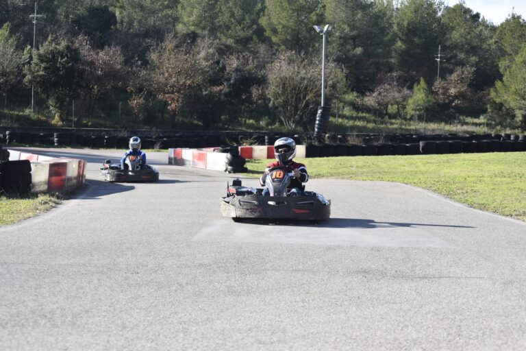

Karting enfant
Dès 7 ans
Un moniteur diplômé d'État, des sessions courtes et un retour après chacune. L'enfant apprend à lire un circuit avant d'apprendre à aller vite.
- À partir de 7 ans et 1,30 m
- Plus jeune : une découverte en kart électrique de 4 à 6 ans, sur demande
- Sécurité et commandes du kart dès le premier tour
- Les parents suivent la journée depuis le bord de piste
195 €la journée, repas du midi compris